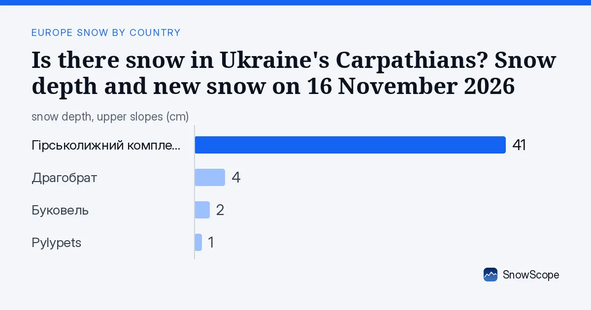

Ukraine shed 3,440 km² of snow in a week: the high ridges stayed white
At Драгобрат, 1,706 m high on the Gorgany, snow depth sits at just 4 cm - a sign of the week's relentless melt across Ukraine's mountains. Yet above 1,500 m, the picture is quite different: 89 percent of the terrain here still holds snow cover, and new snow is arriving this week.
See the live snow forecast for Гірськолижний комплекс "Плай" in the SnowScope appSnow depth, powder alerts and the 3D map, free.
One week of loss
Seven days ago, Ukraine had 5,090 km² of snow cover across the high terrain. As of November 16, that had fallen to just 1,650 km² - a loss of 3,440 km². The melt was not steady: yesterday alone, 480 km² vanished in 24 hours.
This is what late-autumn warming does in dry mountain regions. The air warms above freezing. The thin early-season snowpack, laid down only recently, has little water stored in it. Melt accelerates from the base upwards, where ground and rocks warm faster than the air. Within days, only the highest slopes keep their white. It is a familiar pattern in dry mountains: thin early-season snow melts fast when a warm front pushes through before winter truly sets in.
| Resort | Snow depth | New snow, 72 h | Coming, next days | Top |
|---|---|---|---|---|
| Гірськолижний комплекс "Плай" | 41 cm | 0 cm | 0 cm | 1,048 m |
| Драгобрат | 4 cm | 4 cm | 12 cm | 1,706 m |
| Буковель | 2 cm | 1 cm | 2 cm | 1,370 m |
| Pylypets | 1 cm | 1 cm | 2 cm | 1,165 m |

The snow line and what remains
The snow line now sits at 1,400 m. Everything below that is almost bare. In the band from 500 to 1,000 m, snow cover is just 2 percent and the average depth is zero. Between 1,000 and 1,500 m, things improve slightly: coverage is 25 percent, with an average depth of 1 cm. But above 1,500 m, the picture changes sharply. Here, 89 percent of Ukraine's terrain still holds snow cover, with an average depth of 3 cm.
The three main ridges - the Borzhava, the Gorgany, and Chornohora - all received 4 to 6 cm of new snow in the last three days. This is where the mountains held their own against the melt.
Snow stacks by height
The pattern is stark when you look at the height bands. At 500-1,000 m, almost no snow remains: 2 percent cover, zero average depth. At 1,000-1,500 m, coverage is sparse: 25 percent, 1 cm average depth. At 1,500-2,000 m, it is solid: 89 percent cover, 3 cm average depth. For skiers, the message is clear: elevation is everything right now. Go high, or stay home. Every 500 m you climb puts you in a different world.
Four resorts, two worth watching
As of November 16, only four of Ukraine's 20 ski resorts have measurable snow on the ground. Плай has the most at 41 cm. It sits at 1,048 m in a sheltered valley that kept older snow from earlier storms. It did not receive new snow in the last three days, and its near-term forecast is flat.
Драгобрат at 1,706 m is the standout. It has just 4 cm now, but 12 cm is forecast over the next three days. When the cold system arrives, this is where to be. Буковель and Pylypets, both lower, have 1-2 cm each with weak forecasts.
The turning point comes this week
The melt will not stop at once, but a turning point arrives this week. Over the next three days, the high elevations could see up to 7 cm of new snow at the model's highest estimates. November 20 is the forecast's snowiest day, with 8 cm expected. This is not a large event, but it will cover the exposed rocks and stabilize the thin base that remains.
Beyond that, the outlook improves steadily. The next seven days hold up to 25 cm of snow across the high mountains. Looking further ahead - from November 24 to 30 - the model hints at something much better: a possible 43 cm across the region. By then, the whole pattern will have shifted from early-season melt to real winter snow. Lower resorts, now bare to rock, should start to become playable.
Tips for skiers
- Stay above 1,500 m: 89 percent of terrain at this height has snow cover, compared to only 2-25 percent below. Rocks will show through on lower slopes.
- Драгобрат at 1,706 m is your best bet from November 20 onwards. It has 4 cm now but will gain 12 cm as a cold front arrives.
- Avoid off-piste skiing before checking the official avalanche bulletin. New snow on thin base can be unstable on steep slopes.
- The Borzhava ridge and Chornohora received 4-6 cm of snow in the last three days - prioritize these areas this week as they will improve faster than the lower valleys.
- Late November (Nov 24-30) may bring up to 43 cm of snow. If you can delay your trip, conditions will be much better then.
About these numbers
Resort snow depths are the deepest snow on the resort's upper slopes from the SnowScope snow model (about 1 km, run of 16 November); they are estimates for an area, not a measurement at one point. Station values are measurements on the date shown. Forecasts can change. Always read the official avalanche bulletin before going off-piste.
Cite this report
For research, teaching or the press: the numbers and charts are free to reuse under CC BY 4.0 with this citation.
SnowScope (2026), Ukraine shed 3,440 km² of snow in a week: the high ridges stayed white, https://snowscope.app/blog/en/2026/11/ukraine-snow-report-16-november-2026.html, accessed 2026-11-16
SnowScope (Atlas Labs). (2026, November 16). Ukraine shed 3,440 km² of snow in a week: the high ridges stayed white. SnowScope snow reports. https://snowscope.app/blog/en/2026/11/ukraine-snow-report-16-november-2026.html
BibTeX
@misc{snowscope2026ukrainesnowreport16novem,
author = {{SnowScope (Atlas Labs)}},
title = {Ukraine shed 3,440 km² of snow in a week: the high ridges stayed white},
year = {2026},
month = nov,
howpublished = {\url{https://snowscope.app/blog/en/2026/11/ukraine-snow-report-16-november-2026.html}},
note = {Published 2026-11-16 20:42 UTC; accessed 2026-11-16}
}· CC BY 4.0 · Methods, data and tools →
Гірськолижний комплекс "Плай": snow and temperature by height, this winter vs last (tools) →
Follow Гірськолижний комплекс "Плай"
Free: a message when fresh snow is coming, and the forecast every morning.
More snow reports

Fewer snow days at all 120 points we studied in the Pyrenees since 1980-81, most below 1,500 m: our 46-winter record and the research behind it.

Park City, Utah snowfall forecast for 13 November 2026: almost no snow on the ground right now, about 5 in near the summit from the weekend storm with a snow level of 7,400 to 7,700 ft, rain at the base, and about 12 in up top over the week.

How to spend one good day at Luz-Ardiden, a small ski area above Luz-Saint-Sauveur in the Hautes-Pyrénées: the road, the two sectors, the snow of 46 past winters and which weeks to choose.